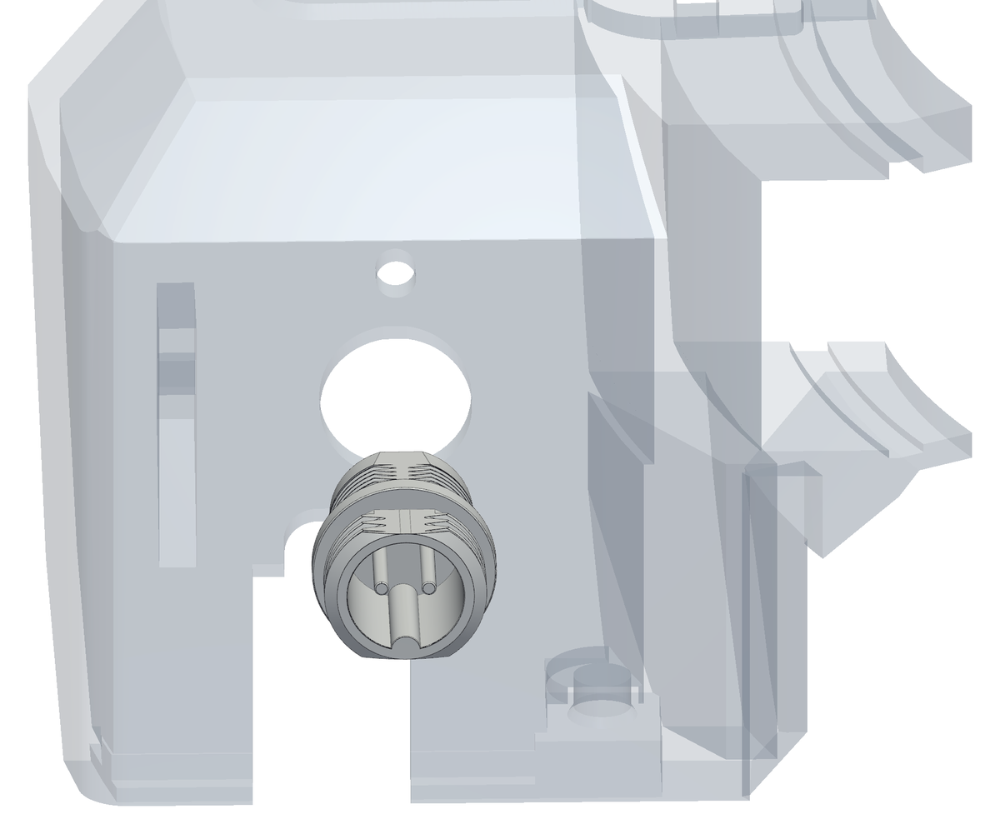
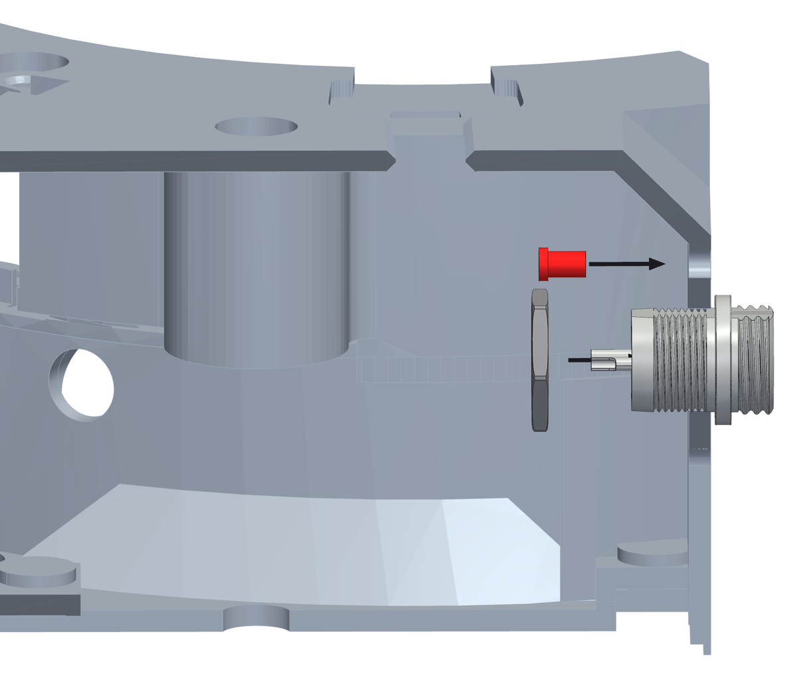
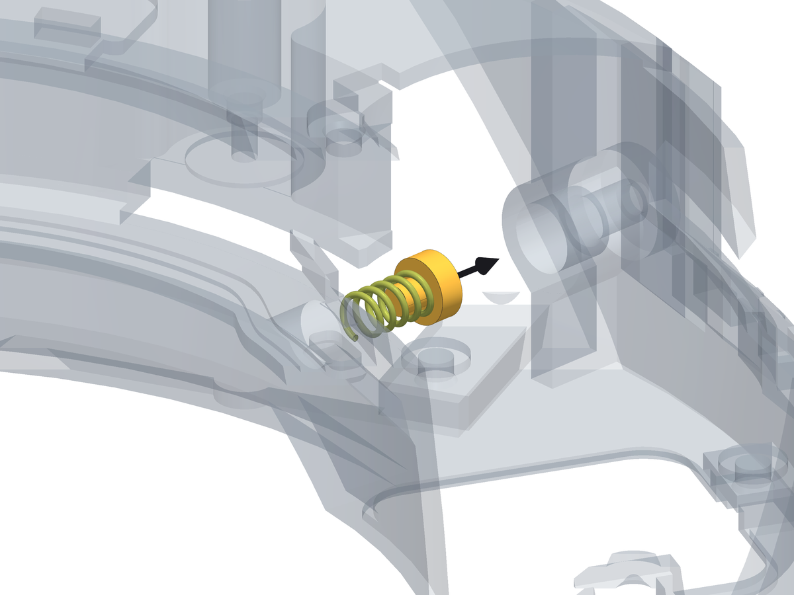

Chapter 4
The spring and the connector, before the arm
Two things go into the box before the arm does. The preload spring and its cup sit between their seat in the box and the flank of the arm plate: once the arm is in, there is no room left to put them there. And the GX12 connector and the status LED go into the head of the box now, while nothing is in the way of the nut.
What you need
Parts
- 1×GX12 connector, 2 pinspanel socket with its nut, and the matching plug for the 12 V lead
- 1×D1 red LED, 3 mmoutside the board; if it comes pre-wired for 12 V, take its resistor off
- 1×preload springcompression spring, wire 0.9, Ø6.7 outside, 13.5 mm free, 11.1 mm fitted, 5.7 N/mm (the prototype's came from a clothes peg)
- 1×spring cupprinted, ASA
Tools
- a 14 mm spanner, for the nut of the GX12 connector
- a soldering iron, to wire the connector and the LED first
Step 1 The GX12 connector, from outside the head


- Wire them first, on the bench: two wires on the GX12's pins, for the 12 V terminal on the board (J3), and two on the LED's legs, for its 2-way JST XH plug (J5). Make them long enough to reach the board: the board is on the panel, and the panel comes off downwards. Once they are in the head, there is no room for the iron.
- The head of the box is the flat wall at the far end. The GX12 connector goes into its Ø12.2 mm hole from the outside, pins first, until its body sits against the outer face.
- Hold it there: the nut goes on from inside in the next step.
Step 2 Its nut and the status LED, from inside


- Reach in through the electronics opening in the floor. Run the nut onto the connector from inside and tighten it against the inner face of the head.
- The status LED sits just above the connector: push it into its hole from inside until its collar stops on the wall.
- Leave both sets of wires long enough inside to reach the board: the board is on the panel, and the panel comes off downwards, so those wires have to follow it.
Step 3 The spring and its cup, into their seat in the box


- Find the boss inside the box, on the outer wall, in line with the arm. The spring goes into it from the inside, pushed outwards until it bottoms. (The prototype's spring came from a clothes peg: 0.9 mm wire, Ø6.7 mm outside - any spring with those measures and about 5.7 N/mm will do.)
- The cup goes on the outer end of the spring, dished side towards the spring: it is what the preload screw will push on.
- The box is upside down and the hatch under the motor is still open: that is the way in. Bring spring and cup up through the hatch, across towards the seat, and push them into it along its axis.
- The spring is 13.5 mm free and will end up 11.1 mm long with the machine together. Do not try to set anything now - that is what the grub screw is for, once the arm is in (chapter 8).